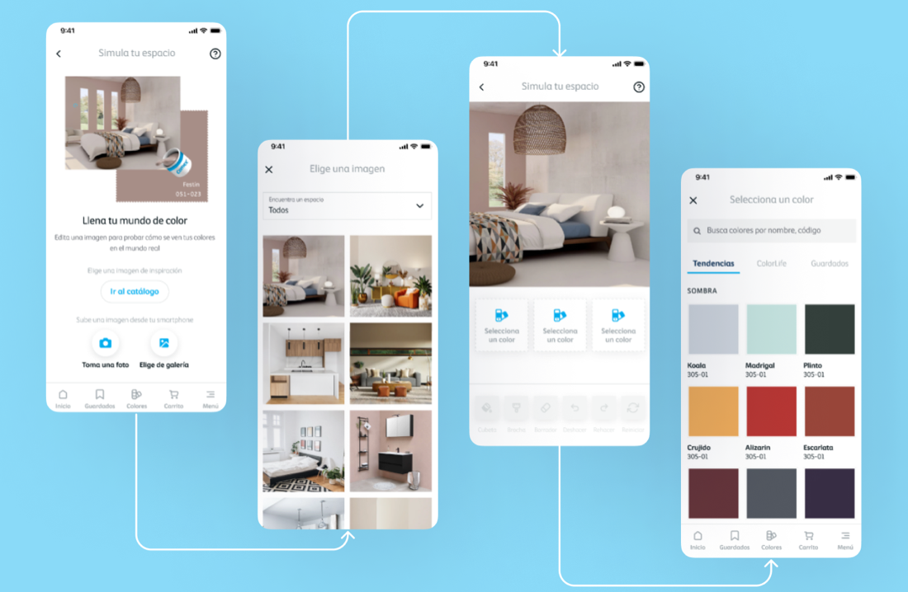
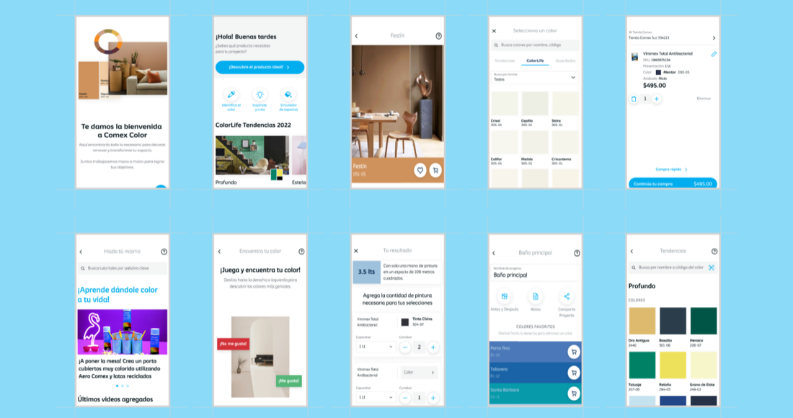
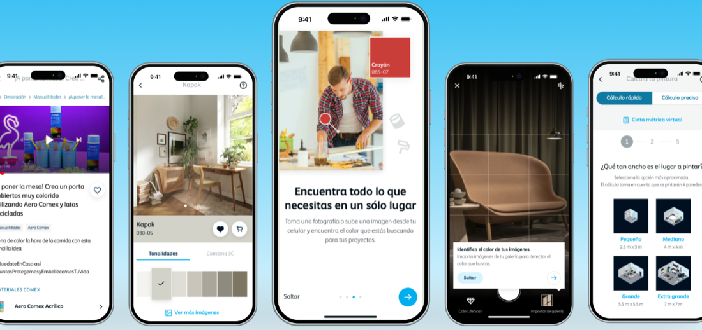
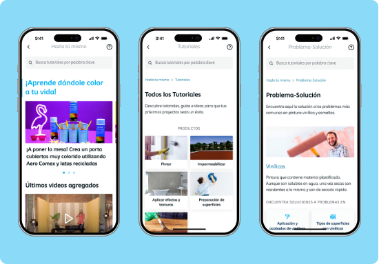
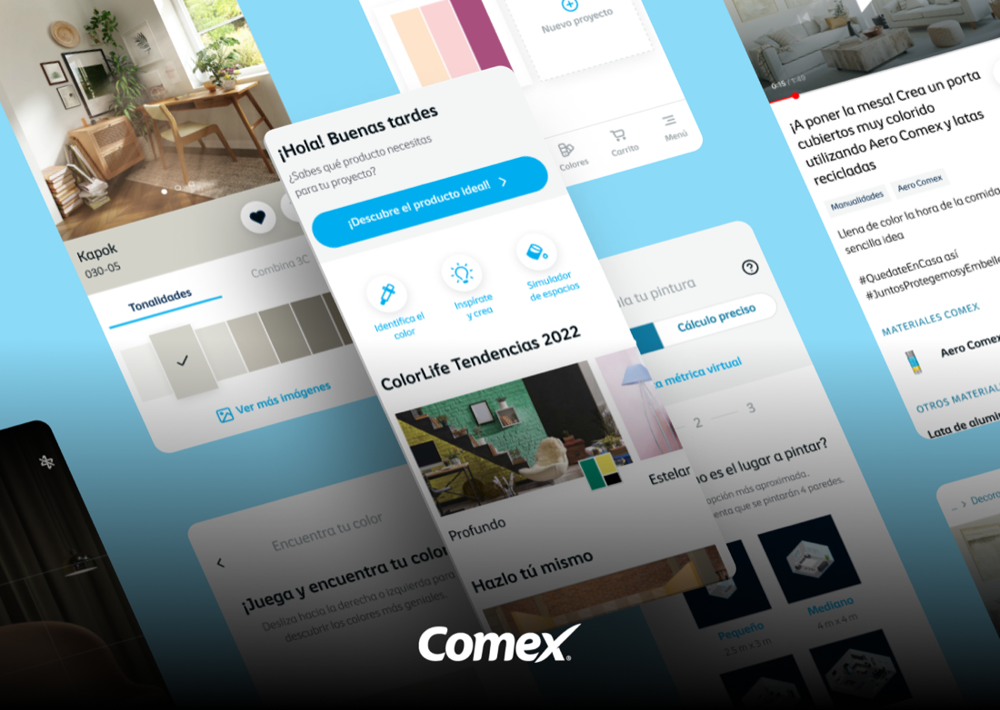

00 · Executive summary12 weeks
A redesign of the Comex Color app, merging separate App Store and Play Store apps into one that connects painters, DIY users, and stores around color.
120+
Hi-fi screens designed
2,155
Survey responses from 35,913 users
20
Interviews with regular users
25
Unmoderated usability studies
Problem
Buying paint and choosing colors felt complicated, and the app lacked the tools users expected.
Approach
Twelve weeks of design thinking, from mixed research to hi-fi prototypes and usability studies.
Outcome
One app with color simulation, a material calculator, DIY content, and a simpler purchase flow.
Design pillars
- Inspiration & relevance: relevant content, including training.
- Findability: a clear IA to find products through different paths.
- Conversions: attractive, usable, easy checkout.
- Guidance: support users throughout their journeys.
Timeline · twelve weeksFig. A
W1–3W4–6W7–9W10–12
Empathize
Define
Ideate
Prototype
Testing
Step 01 / 05Weeks 1–3
01
Empathize
GoalEvaluate satisfaction with the current app and find where to improve.
Mixed research
- Survey emailed to 35,913 users; 6% responded (2,155).
- ~20 interviews with regular users of the app.
- Benchmark of 6 platforms with similar features.
- Focus groups to cross business goals with user needs.
Survey results · 2,155 usersFig. B
The material calculator is essential. They should add one that considers the type of surface and the amount of paint needed to prevent wastage.
Juan Aguilar · Construction contractor
An augmented reality feature to see how colors would look in real-time in my space would be amazing.
Alejandra Dávila · Architecture student
Step 02 / 05Weeks 4–5
02
Define
GoalThree core features where business goals and user needs meet.
CORE 01
Simulate color in real space
Accurate visualization with augmented reality. The main reason to download the app.
CORE 02
Material calculator
Precise estimates of paint and supplies, less waste.
CORE 03
Decoration ideas & DIY
Suggestions by color and taste, with articles and guides.
GT
Guadalupe, 22College student
- Need
- Inspiration and color help for her first apartment.
OG
Oliver, 30Engineer
- Need
- Visualize walls and calculate materials, fast.
EJ
Elydia, 42Mother, professional
- Need
- Quick palettes and tips to refresh her home.
SR
Santiago, 55Construction pro
- Need
- Precise quantities and previews before a job.
User journey · DIY profile
Stage
Decide to paint
Search for ideas
Pick colors
Measure
Purchase
Emotion
Unsure
Excited
Confusion
Focused
Satisfied
Pain point
Shares the idea, decides to paint
References are expensive rooms unlike hers
Online colors don't match; unsure about tone and light
Doesn't know how much paint or cost
Unsure about delivery or store pickup
Opportunity
DIY articles and videos, updated regularly
Real homes and pro projects
Inspiration with colors, combos, and tutorials
A material calculator
Better distributor communication
Step 03 / 05Weeks 6–7
03
Ideate
GoalOne app, segmented by user type, with tools always within reach.
Information architectureFig. C
Open Comex→Sign up / login→Comex client/Professional · step by step→Home
Identify colorCamera · capturePalette generator
InspireSpacesColor
SimulatorCatalog · take a pictureGallery · color simulation
Trends · Blog · DIYColors · saved · cart
Also considered →Full color library + 3CGet color from imageScan with or without NIXShare palettesExperience by segmentPainter evaluation
Style#00AEEF#05CAB3Comex typeface
Step 04 / 05Weeks 8–12
04
Prototype & test
GoalValidate 120+ screens with 25 unmoderated studies before handing off.
Usability studies
- 25 unmoderated studies with an equal sample of men and women, all with informed consent.
- Measured task completion, completion with obstacles, and abandonment.
- Design system with colors, type, buttons, controls, and icons.
What changed after testing
Simulation not accurate→A more faithful view of colors in real spaces
Hard to estimate material→A more detailed calculator
Confusing navigation→Simplified actions and interactions
No instant feedback→Real-time color previews
Wanted to learn→Blogs and guides added

Step 05 / 05Final result
05
Key features
GoalEverything for a paint project in one place.
SIMULATE
See it on your walls
Pick a photo or catalog image and try colors live.
IDENTIFY
Find a color
From a photo or the gallery, with a palette generator.
CALCULATE
Quick or precise
Room size presets or a virtual measuring tape.
DIY
Learn by doing
Tutorials and problem-solution guides with Comex products.
COLORS
A palette for everyone
Trends and tones for pros and customers.
BUY
A simpler cart
Quick purchase straight from a color or project.

06 · ResultsDeliverables
06
One app for color
OutcomeA tested concept, ready to build, with a roadmap for what comes next.
Quantitative dashboardConcept & findingsFinal test findingsEvolution roadmapMVP suggestionService recommendationsFigma filesPrototypeStyle guideFunctional docs
Next steps
01
DistributorsUpdate their logistics systems.
02
Technical consultationBefore full development.
03
AnalyticsIntegrate them in the app.
04
TrainingTechnical and marketing for distributors.
Evidence
New app Simulator DIY Home



Next case · 15 / 21Grupo Guia
→